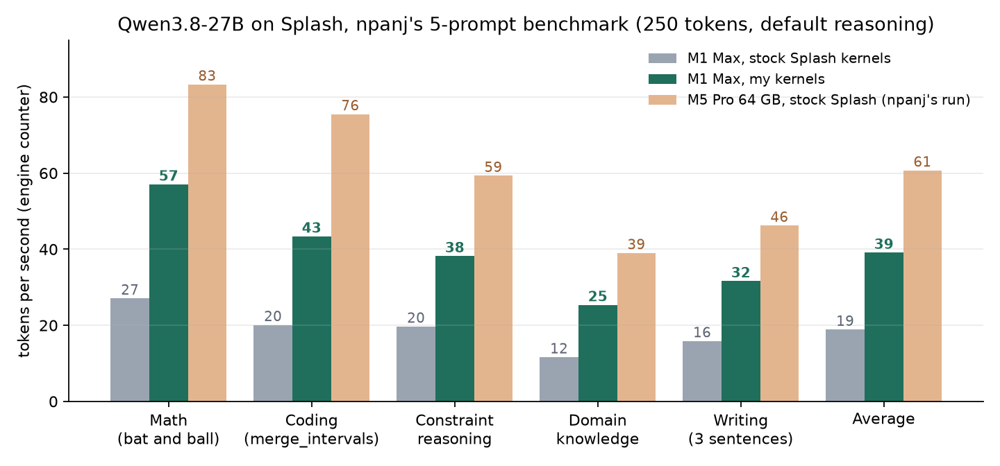
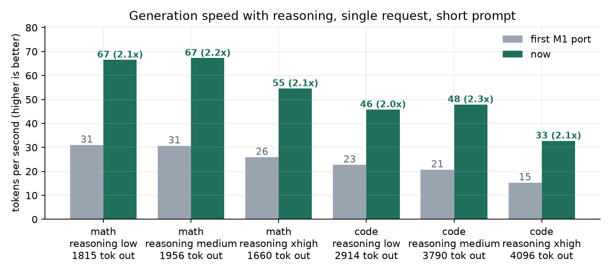
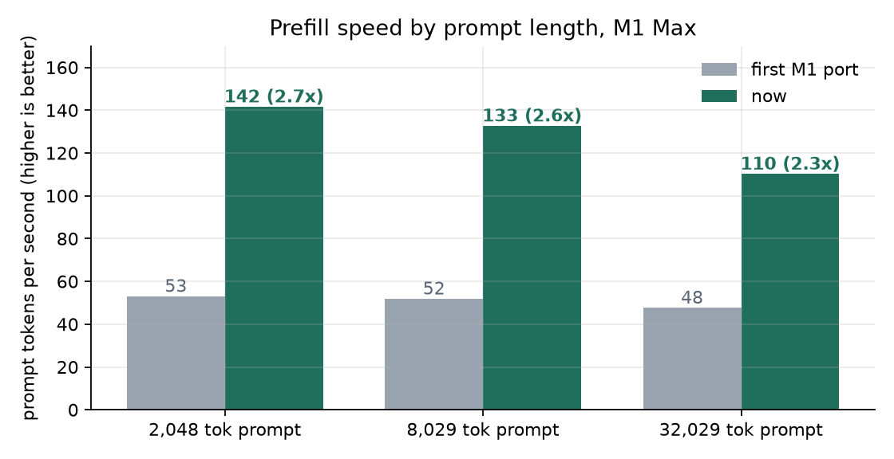
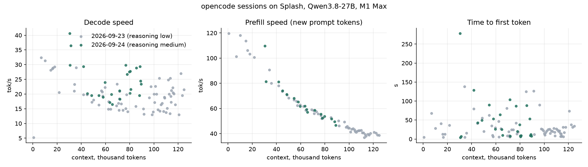
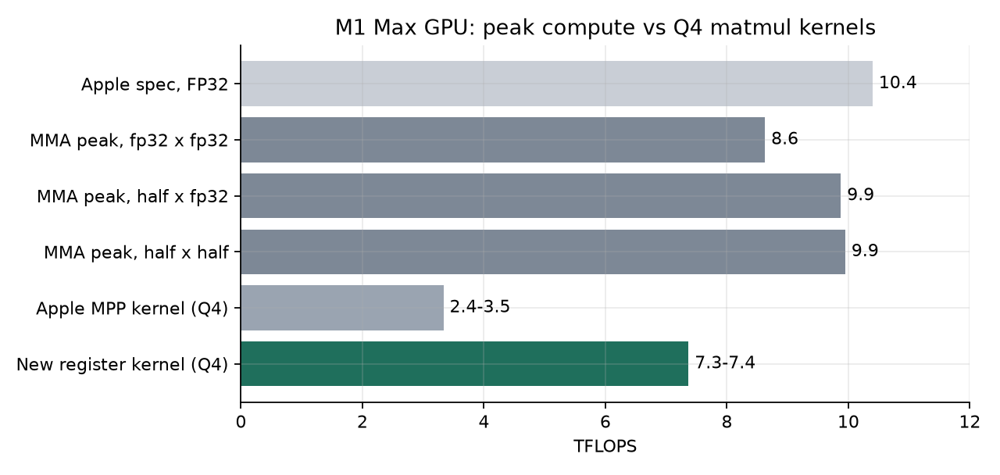

TL;DR: 39 tok/s is the average of npanj's five-prompt Splash benchmark (short prompts, default reasoning), up from 19 tok/s with Splash's own kernels on the same Mac. In a real coding-agent session (opencode, 30K-90K context) it ran at 19-36 tok/s. Details and more conditions below.
Last week the Inco team released Splash 1.0 (https://github.com/incoai/splash), a local inference engine for Apple silicon built around one model at a time, with model-specific Metal kernels and DFlash speculative decoding. On an M5 Pro they report Qwen3.8-27B decoding at twice the speed of the next-fastest engine. It is a really impressive piece of work. It also only runs on an M3 or newer.
I have an M1 Max (32 GPU cores, 64 GB), so I adapted it. Enabling the M1 was enough to make it run, but slowly: Splash's kernels rely on bfloat16 arithmetic, which the M1 does not have, and on Apple's MPP matrix library, which is slow on this GPU. So I wrote my own kernels for those parts.
The gist: the model does the same math either way: 4-bit weights times activations, summed up. Stock Splash does it in bfloat16, which the M1 can't do in hardware, so on M1 it falls back to Apple's generic matrix library, which reaches only a quarter to a third of the GPU's peak. My kernels do the identical math in formats the M1 runs natively: each 4-bit weight is turned into an exact half-precision number with a small bit trick, each activation becomes an exact fp32 number, and the M1's matrix instructions multiply and add them in fp32 without leaving registers. Every multiplication is exact and only the order of additions changes, so the results match up to the last bit of rounding (99.92% same top token). For several parallel requests, each weight is also unpacked once and reused for all of them.
What surprised me most: the M1 Max is not weak hardware. Apple rates its GPU at 10.4 TFLOPS FP32, my microbenchmark gets 8.6-9.9 TFLOPS out of its matrix instructions, and its 400 GB/s memory bandwidth is more than an M4 Pro's 273 GB/s. What held it back was software built for newer chips. With kernels written for it, a five-year-old laptop runs a 27B model with a 256K context at 64% of an M5 Pro's speed on the same benchmark, up from 31%.
Every number below compares stock Splash kernels running on my M1 Max ("before") with my kernels ("after"): same machine, same model (Qwen3.8-27B, 4-bit), temperature 0, fresh server, no prompt cache.
Benchmark 1: npanj's splash-plus prompts. npanj (GitHub) published a Splash benchmark with five fixed prompts (https://github.com/npanj/splash-plus). I ran their script unmodified: 250 tokens, the model's default reasoning (xhigh), speed from Splash's own counter.
| Prompt | Before | After | npanj's Splash-Q4 on an M5 Pro (64 GB) |
|---|---|---|---|
| Math (bat and ball) | 27.1 tok/s | 57.0 tok/s | 83.3 tok/s |
| Coding (merge_intervals) | 20.1 tok/s | 43.4 tok/s | 75.5 tok/s |
| Constraint reasoning | 19.7 tok/s | 38.2 tok/s | 59.3 tok/s |
| Domain knowledge | 11.7 tok/s | 25.3 tok/s | 39.0 tok/s |
| Writing (3 sentences) | 15.9 tok/s | 31.6 tok/s | 46.2 tok/s |
| Average | 18.9 tok/s | 39.1 tok/s | 60.7 tok/s |

The last column is npanj's own run of the same script on an M5 Pro with 64 GB. My 2021 M1 Max went from 31% to 64% of an M5 Pro on these prompts.
Benchmark 2: context and reasoning effort (one request, prompt processing excluded):
| Request | Context | Reasoning | Before | After |
|---|---|---|---|---|
| Code | 22 tok | off | 26 tok/s | 54 tok/s |
| Prose | 23 tok | off | 16 tok/s | 36 tok/s |
| Math problem | 40-82 tok | low / medium / xhigh | 31 / 31 / 26 tok/s | 67 / 67 / 55 tok/s |
| Coding problem | 46-88 tok | low / medium / xhigh | 23 / 21 / 15 tok/s | 46 / 48 / 33 tok/s |
| Code explanation | 8K tok | off | 13 tok/s | 27 tok/s |
| Code explanation | 32K tok | off | 13 tok/s | 24 tok/s |
| 4 parallel code requests | 22 tok each | off | 18 tok/s total | 65 tok/s total |

Prompt processing: 2K prompt 53 -> 142 tok/s, 8K 52 -> 133 tok/s, 32K 48 -> 110 tok/s (time to first token on 32K: 672 s -> 290 s).

I also followed Splash's own published methodology (256 tokens, reasoning off, warmup, ABBA, medians) with my own prompts for their four scenario names: 2.07-2.11x in every scenario.
Benchmark 3: a real coding-agent session. I let opencode rewrite the RealWorld "Conduit" backend from Express to FastAPI against the official API test suite, with reasoning medium, one request at a time. 43 minutes, 25 requests, context growing from 30K to 89K tokens:
| Context | Decode (median) | Prefill of new prompt tokens (median) |
|---|---|---|
| 16-32K | 36.5 tok/s | 96 tok/s |
| 32-64K | 19.5 tok/s | 68 tok/s |
| 64-96K | 23.4 tok/s | 54 tok/s |
95% of prompt tokens came from Splash's prefix cache, but about half of the wall time was still spent waiting for the first token after each tool call. On the M1, long-context attention is now the bottleneck for agents, not the matrix kernels.

Speed depends a lot on the text: the draft model predicts math and code well and prose less well, and long contexts cost more.
Why the M1 was slow, and what I changed:
- Apple's MPP matmul runs the model's 4-bit layers at 2.4-3.5 TFLOPS on this GPU. Apple rates the M1 Max GPU at 10.4 TFLOPS FP32, and a register-only simdgroup MMA microbenchmark reaches 8.6 (fp32 x fp32) to 9.9 (half x fp32). My register-only prompt-processing kernel runs the same layers at 7.3-7.4 TFLOPS.

- No bfloat16 on M1: 4-bit weights become exact half values with a bit trick (
nibble | 0x6400= 1024 + q, then subtract 1024), activations go from bf16 to fp32 by appending zero bits, products and sums stay in fp32. Every q*x product is exact, so only the summation order changes. - Splash's fastest decode kernel produced garbage on the M1: its split-K reduction read partial sums through a non-coherent cache. One
coherent(device)fixed it. - A new decode kernel unpacks each weight once for all parallel requests, which is where the 3.6x with four requests comes from.
Quality check: I compared the model's token probabilities before and after the last kernel change on 2528 positions. The top token agrees 99.92% of the time and the mean KL divergence is 0.00013 nats. The engine's test suite passes.
Code: https://github.com/paperniuk/splash/tree/apple7-m1-kernels (a fork; I'm offering it upstream in https://github.com/incoai/splash/issues/131). Credit to the Inco team for Splash and to npanj for a reproducible benchmark. M2 uses the same code path and should work, but I haven't tested it. If you have an M2, I'd love to hear how it runs.